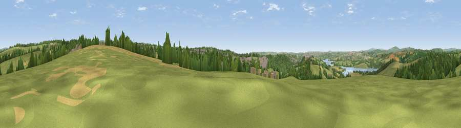

Viewpoint near Roborough
#11040 in England · top 21% of its area beats it · near RoboroughThe view, rendered

A 360° render of this exact spot computed from the terrain model, tree cover and land cover — summer colours, afternoon light, calibrated against photographs of famous viewpoints. Real trees, hedges and buildings will differ in detail.
The panorama
Grey silhouette: terrain skyline in each direction (720 bearings, Earth curvature and refraction included). Dashed green: skyline with trees (+15 m) and buildings (+8 m) as obstacles. Blue strip: how far the ground is visible on each bearing.
Where the view opens
Wedge length = distance to the farthest visible ground on that bearing (vegetation-aware). Rings at 10, 25 and 50 km.
What fills the view
51% grassland · 25% woodland · 11% cropland · 10% built-up · 3% water
Angular shares of the visible panorama (visual magnitude), not map area. Landscape diversity 0.55 (0–1 Shannon).
Key numbers
More beautiful places nearby
The staircase of upgrades: each row has a higher view potential than everything closer. Driving times are estimates from straight-line distance, calibrated against real road routing — check an actual route before setting out.
| Place | Direction | Drive | Score |
|---|---|---|---|
| Viewpoint near Shaugh Prior | ENE · 5 km | ~12 min | 73.2 |
| Viewpoint near Shaugh Prior | ENE · 6 km | ~12 min | 77.0 |
| Viewpoint near Lee Moor | E · 7 km | ~15 min | 82.7 |
| Viewpoint near Downderry | WSW · 17 km | ~30 min | 83.5 |
| Viewpoint near Hope | SE · 31 km | ~48 min | 84.4 |
| Pencarrow Head | WSW · 35 km | ~53 min | 86.0 |
| Viewpoint near Lesnewth | NW · 47 km | ~68 min | 87.7 |
| Viewpoint near Crackington Haven | NW · 48 km | ~68 min | 88.1 |
50.44208, -4.13390 · source: screening · position refined by local search. Computed location — check access rights before visiting.